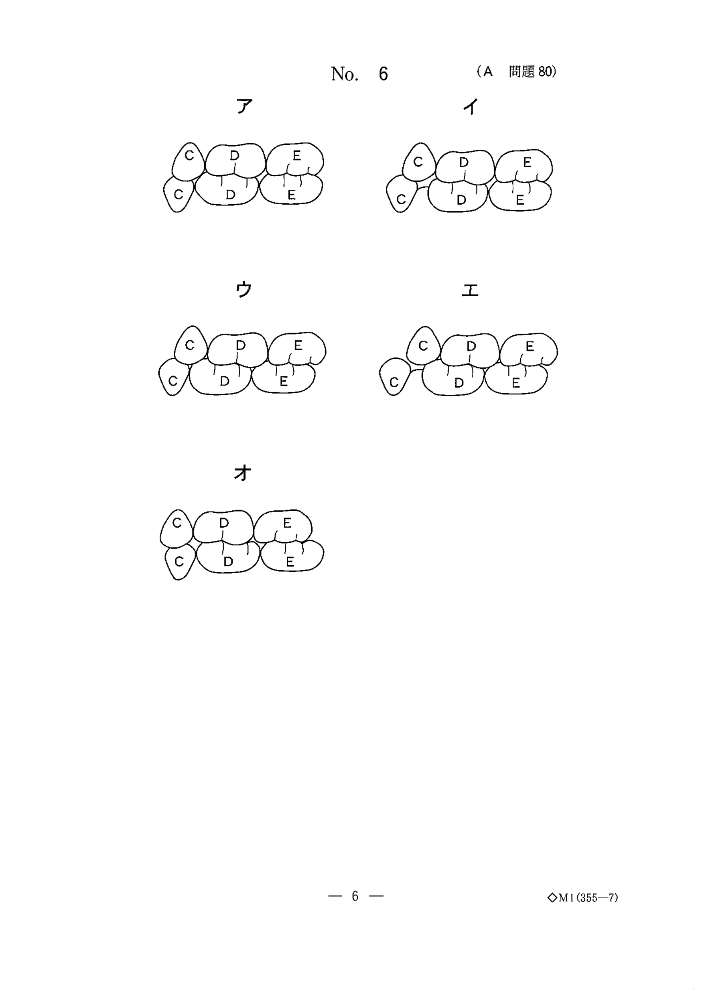

検体検査
検体検査の概要
検体検査とは、患者から得られた生体材料（血液・尿・組織など）を用いて行う検査である。全身的評価が必要な場合にスクリーニング検査として行われ、入院・全身麻酔を必要とする患者にはさらに検査が追加される。
検査は大きく3つに分類される：検体検査（血液・尿・組織）、生理・生体検査（血圧・心電図など患者自身に行う）、画像検査（X線・CT・MRIなど）。
術前検査の主要項目
| カテゴリ | 検査項目 |
|---|---|
| 尿検査 | 尿糖、尿タンパク、沈渣、比重、pH |
| 血液一般 | 白血球数、赤血球数、Hb、Ht、血小板数、血液型（ABO・Rh） |
| 炎症 | 赤沈、CRP |
| 生化学 | 総タンパク、A/G比、BUN、電解質、コレステロール、TG、AST、ALT、LDH、ALP、γ-GTP、Cr、尿酸、血糖、CRP |
| 出血凝固 | 出血時間、凝固因子、PT、APTT、フィブリノーゲン |
| 感染免疫 | HBs抗原・抗体、HC抗体、梅毒血清反応 |
| 血液ガス | pH、PaO2、PaCO2、HCO3−、BE |
凝固系検査（PT・APTT・Dダイマー）
血液凝固は内因系と外因系の2つの経路に大別される。それぞれのスクリーニング検査が異なるため、PT・APTTの延長パターンから原因疾患を推定できることが頻出ポイントである。
凝固系のスクリーニング検査
| 検査 | 評価する経路 | 基準値 | 延長する疾患 |
|---|---|---|---|
| PT（プロトロンビン時間） | 外因系＋共通系 | 10〜13秒 | 肝硬変、VitK欠乏症、DIC、ワルファリン服用 |
| APTT（活性化部分トロンボプラスチン時間） | 内因系＋共通系 | 25〜40秒 | 血友病A・B、von Willebrand病、DIC、ヘパリン投与 |
- PT延長＋APTT正常 → 外因系の異常（第VII因子欠乏など）
- PT正常＋APTT延長 → 内因系の異常（血友病＝第VIII・IX因子欠乏）
- PT延長＋APTT延長 → 共通系の異常、肝硬変、DIC、VitK欠乏
Dダイマーは、フィブリンが形成されたのち線溶系で分解された産物であり、血栓の存在を示すマーカーである。肺血栓塞栓症やDICの診断に有用。
プロトロンビン時間が延長するのはどれか。2つ選べ。
b 肝硬変
c 慢性腎不全
d ビタミンK欠乏症
e 血小板減少性紫斑病
【解説】PTは外因系＋共通系を評価する。肝硬変では凝固因子の産生低下、VitK欠乏では凝固因子（II, VII, IX, X）の活性化障害によりPTが延長する。血友病は内因系（APTT延長）、慢性腎不全・血小板減少性紫斑病はPTに直接関与しない。
プロトロンビン時間は正常であるが、活性化部分トロンボプラスチン時間が延長したときに疑われる疾患はどれか。1つ選べ。
b 血友病
c 肺血栓塞栓症
d 再生不良性貧血
e 特発性血小板減少性紫斑病
【解説】PT正常＋APTT延長は内因系の異常を示す。血友病A（第VIII因子欠乏）・血友病B（第IX因子欠乏）が代表的。肝硬変はPTも延長する。
長期臥床患者では全身麻酔後に肺血栓塞栓症を起こしやすい。このリスクを判断するための検査項目はどれか。1つ選べ。
b PT
c CRP
d Dダイマー
e 心筋トロポニンT
【解説】Dダイマーはフィブリン分解産物であり、体内での血栓形成を反映する。長期臥床→深部静脈血栓→肺血栓塞栓症のリスク評価に用いる。CKは筋障害、心筋トロポニンTは心筋梗塞のマーカー。
肝機能検査
肝機能検査は、肝臓の細胞障害、胆汁うっ滞、合成能、解毒能をそれぞれ評価する検査に分類される。
主要な肝機能マーカー
| 検査項目 | 臨床的意義 | 特徴 |
|---|---|---|
| AST（GOT） | 細胞破壊マーカー | 肝臓・心筋・骨格筋に存在。肝硬変ではAST＞ALT |
| ALT（GPT） | 細胞破壊マーカー | 肝臓に特異性が高い。急性肝炎で著明に上昇 |
| γ-GTP | 胆汁うっ滞・アルコール | アルコール摂取で特異的に上昇 |
| ALP | 胆汁うっ滞 | 6種のアイソザイム。骨疾患でも上昇 |
| LDH（LD） | 細胞破壊マーカー | あらゆる組織に存在。特異性は低いがスクリーニングに有用 |
| ChE | 肝合成能 | 肝実質障害で低下（他の酵素は上昇するのにChEは低下） |
| 色素排泄試験 | 肝解毒能 | ICG試験・BSP試験。肝臓の異物処理能力を評価 |
- AST＞ALT（通常の肝炎ではALT＞AST）
- γ-GTPが著明に上昇
- この2つの組み合わせがアルコール性肝障害の典型パターン
アルコール性肝障害で高値を示すのはどれか。2つ選べ。
b ALP
c AST
d γ-GTP
e TP
【解説】アルコール性肝障害ではAST＞ALTの上昇パターンとγ-GTPの著明な上昇が特徴的。Alb・TPは肝合成能の指標であり、障害時はむしろ低下する。ALPは胆汁うっ滞で上昇するが、アルコール性肝障害の主要マーカーではない。
細胞破壊で漏出した酵素の活性を測定する生化学検査項目はどれか。2つ選べ。
b UA
c ALT
d ACTH
e LD〈LDH〉
【解説】ALT（GPT）は肝細胞、LDH（LD）はあらゆる組織の細胞に存在する酵素で、細胞が破壊されると血中に漏出して上昇する（逸脱酵素）。TGは脂質、UAは尿酸（プリン体代謝産物）、ACTHは下垂体ホルモンであり酵素ではない。
肝臓の解毒能力を評価するのはどれか。1つ選べ。
b ACTH試験
c 色素排泄試験
d フロセミド負荷試験
e クレアチニンクリアランス
【解説】色素排泄試験（ICG試験・BSP試験）は、肝臓に色素を注入しその排泄速度から肝臓の解毒能・異物処理能力を評価する。レノグラムは腎血流、ACTH試験は副腎機能、フロセミド負荷試験は腎機能、Ccrは糸球体濾過量の評価。
腎機能検査（eGFR・Ccr）
腎機能の評価は、糸球体濾過量（GFR）の推定が中心となる。GFRの推定にはクレアチニンクリアランス（Ccr）と推算GFR（eGFR）が用いられる。
クレアチニン（Cr）
筋肉内のクレアチンの代謝産物で、腎糸球体で濾過され再吸収されずに排泄される。このため腎機能の指標として有用。筋肉量に比例するため、性別・年齢・体格の影響を受ける。
Ccr と eGFR
| 指標 | 評価方法 | 特徴 |
|---|---|---|
| Ccr | 24時間蓄尿で血中・尿中のCrを測定 | GFRを推算できる。実測値に近い |
| eGFR | 血清Cr値から計算式で推算 | 算出に用いるのは性別・年齢・血清Crの3項目 |
- 性別（男女で筋肉量が異なる）
- 年齢（加齢で腎機能が低下）
- 血清クレアチニン値
※体重・身長・BUNは使用しない
CKD（慢性腎臓病）の重症度評価にはeGFRが用いられ、GFR区分（G1〜G5）で病期を分類する。
慢性腎臓病〈CKD〉の重症度の評価に用いるのはどれか。1つ選べ。
b BNP
c BUN
d CRP
e eGFR
【解説】CKDの重症度はeGFRで評価する。ASTは肝機能、BNPは心不全、BUNは腎機能の指標だがeGFRほど正確ではない（食事・脱水の影響を受ける）、CRPは炎症マーカー。
クレアチニンクリアランスで正しいのはどれか。1つ選べ。
b 筋肉量低下で上昇する。
c 腎機能低下で上昇する。
d 血清蛋白増加で上昇する。
e 腎臓で生合成されたクレアチニンを測定する。
【解説】CcrはGFRの推算に用いられる。筋肉量低下→Cr産生減少→Ccr見かけ上変化なし（低下する方向）。腎機能低下→Cr排泄減少→血清Cr上昇→Ccr低下。クレアチニンは筋肉内で産生される（腎臓ではない）。
推算糸球体濾過量 〈eGFR〉の算出に用いるのはどれか。3つ選べ。
b 体 重
c 年 齢
d 血清尿素窒素
e 血清クレアチニン
【解説】eGFRの算出式には性別・年齢・血清Crの3項目を用いる。体重やBUNは含まれない。
糖代謝・脂質代謝検査
糖代謝の検査
| 検査項目 | 評価内容 | 食事の影響 |
|---|---|---|
| 空腹時血糖 | その時点の血糖値 | 直前の食事で上昇 |
| HbA1c | 過去1〜2ヵ月の平均血糖 | 食事の影響を受けない |
| 尿糖 | 血糖が閾値（約170mg/dl）を超えると陽性 | 食事の影響を受ける |
脂質代謝の検査
| 検査項目 | 臨床的意義 | 食事の影響 |
|---|---|---|
| トリグリセリド（TG） | 脂肪組織の主成分。脂質代謝の指標 | 直前の食事で上昇 |
| 総コレステロール | 動脈硬化の指標 | 比較的安定 |
| HDLコレステロール | 善玉。低値→冠動脈疾患リスク | 比較的安定 |
| LDLコレステロール | 悪玉。高値→動脈硬化リスク | 比較的安定 |
- 血糖（食後に上昇）
- トリグリセリド（TG）（食後に上昇）
※HbA1c、γ-GTP、HDLコレステロールは食事の直接的影響を受けない
直前の食事の影響を受ける血液検査項目はどれか。2つ選べ。
b HbA1c
c γ-GTP
d トリグリセライド
e HDLコレステロール
【解説】血糖値は食後に急速に上昇し、TGも食事中の脂肪を反映して食後に上昇する。HbA1cは過去1〜2ヵ月の平均血糖の指標であり食事の直接的影響を受けない。γ-GTPはアルコール・薬物の影響、HDLコレステロールは食事の直接的影響を受けにくい。
脂質代謝の指標となる検査項目はどれか。1つ選べ。
b HbAlc
c フェリチン
d クレアチニン
e トリグリセリド
【解説】TG（トリグリセリド）は脂肪組織の主成分であり脂質代謝の指標。ALTは肝機能、HbA1cは糖代謝、フェリチンは鉄代謝（貯蔵鉄）、クレアチニンは腎機能の指標。
56歳の男性。左側下顎智歯の抜去目的で来院した。本人持参の健康診断の結果を示す。根拠となったのはどれか。すべて選べ。

b HbA1c
c 空腹時血糖
d トリグリセライド
e 総コレステロール
【解説】健康診断の結果から、血圧高値・HbA1c高値・空腹時血糖高値が認められ、高血圧と糖尿病が疑われる。抜歯前にこれらの管理が必要。TGと総コレステロールは基準範囲内であった。
炎症マーカー
感染症・炎症の評価に用いる血液検査マーカー。歯性感染症の重症度判定に重要。
主要な炎症マーカー
| 検査項目 | 臨床的意義 | 特徴 |
|---|---|---|
| CRP（C反応性タンパク） | 炎症・組織破壊の存在 | 肺炎球菌のC多糖体と反応。炎症で迅速に上昇 |
| 白血球数（WBC） | 感染・炎症 | 基準値 5,000〜8,500/μl。細菌感染で好中球増多 |
| プロカルシトニン（PCT） | 細菌感染の重症度 | 細菌性敗血症で著明に上昇。ウイルス感染では上昇しにくい |
| 赤沈（ESR） | 炎症の存在 | 反応が遅い（CRPより鈍い） |
血液検査で歯性全身感染症の際に増加するのはどれか。3つ選べ。
b CEA
c 白血球数
d アミラーゼ
e プロカルシトニン
【解説】歯性全身感染症（敗血症など）ではCRP・WBC・PCTがいずれも上昇する。CEAは腫瘍マーカー（大腸癌など）、アミラーゼは唾液腺・膵臓の酵素であり感染症マーカーではない。
その他の検体検査
真菌感染マーカー
β-グルカンは真菌の細胞壁成分であり、血中β-グルカン高値は深在性真菌症（カンジダ血症、アスペルギルス症など）の診断に用いられる。表在性の口腔カンジダ症では上昇しない。
血中β-グルカン値が診断に用いられるのはどれか。1つ選べ。
b 帯状疱疹
c 深在性真菌症
d MRSA感染症
e 化膿レンサ球菌感染症
【解説】β-グルカンは真菌細胞壁の構成成分。血中で高値を示すのは深在性真菌症。B型肝炎・帯状疱疹はウイルス感染、MRSA・化膿レンサ球菌は細菌感染であり、β-グルカンとは無関係。
内分泌検査
コルチゾールは副腎皮質から分泌されるステロイドホルモンで、ストレス応答・糖代謝・抗炎症作用に関与する。
Addison病（慢性副腎皮質機能低下症）では副腎皮質の破壊によりコルチゾールが低下する。色素沈着、低血圧、易疲労感が特徴的。
内分泌検査で血中コルチゾールが低値を示すのはどれか。1つ選べ。
b クレチン病
c 1型糖尿病
d Addison 病
e アクロメガリー
【解説】Addison病は副腎皮質の機能低下によりコルチゾールが低値を示す。褐色細胞腫はカテコールアミン過剰（副腎髄質）、クレチン病は甲状腺機能低下、1型糖尿病はインスリン分泌低下（膵臓）、アクロメガリーは成長ホルモン過剰（下垂体）。
尿検査
尿は各種代謝産物や有機・無機塩類を含み、生体内の状況を反映する。一般的な検査項目は尿沈渣、尿比重・尿量、尿タンパク（150mg/日以上で腎性タンパク尿）、尿ブドウ糖・ケトン体である。
ケトン体は脂肪酸のβ酸化で産生され、飢餓・糖尿病（インスリン不足）で脂肪分解が亢進した際に尿中に出現する。血液ではなく尿を検体として測定する点に注意。
尿を検体として用いる検査項目はどれか。1つ選べ。
b AST
c ケトン体
d HIV抗体
e HbA1c値
【解説】ケトン体は尿を検体として測定する。PT・AST・HIV抗体・HbA1cはいずれも血液検体で測定する検査項目。
病理組織学的検査（生検）
生検（biopsy）は、病変の一部を採取して組織学的に診断する検査。悪性腫瘍を疑う場合、採取部位の選択が重要となる。
生検の採取部位は、腫瘍の辺縁部（正常組織との境界領域）から採取するのが原則。中心部は壊死組織が多く、診断に適さないことがある。
初診時の口腔内写真（別冊No.7A）を別に示す。潰瘍周囲には硬結を触知する。悪性腫瘍を疑い生検を行うこととした。採取部位（別冊No.7B）を図に示す。適切なのはどれか。1つ選べ。

b イ
c ウ
d エ
e オ
【解説】生検は病変の辺縁部（正常組織との境界）から採取する。中心部の壊死組織や、病変から離れた正常組織からでは正確な診断ができない。「イ」は辺縁部に該当する。
主要検査項目の基準値まとめ
| 検査項目 | 基準値 | 臨床的意義 |
|---|---|---|
| 赤血球数 | 男 400〜540×104/μl 女 380〜490×104/μl | 貧血の評価 |
| Hb | 男 14〜18 g/dl 女 12〜16 g/dl | 貧血の評価 |
| Ht | 男 36〜49% 女 34〜44% | 貧血・脱水の評価 |
| 白血球数 | 5,000〜8,500/μl | 炎症・感染の評価 |
| 血小板数 | 13〜35×104/μl | 出血傾向の評価 |
| PT | 10〜13秒 | 外因系凝固 |
| APTT | 25〜40秒 | 内因系凝固 |
| 出血時間（Ivy法） | 2〜5分 | 血小板・血管壁機能 |
| 総タンパク | 6.5〜8.0 g/dl | 栄養状態・肝機能 |
| TTT | 1.5〜7.0 単位 | 肝機能（膠質反応） |
| ZTT | 4〜12 単位 | 肝機能（膠質反応） |
| eGFR | ≧90 ml/min/1.73m2 | 腎機能（G1正常） |